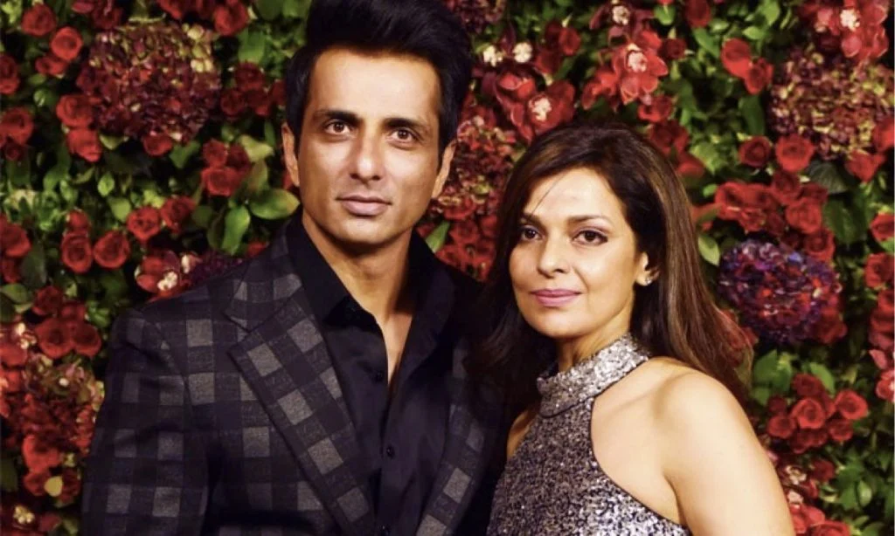
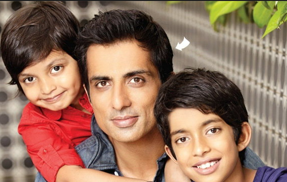

Gallery



Actor • Humanitarian • Inspiration
Sonu Sood is one of India’s most respected actors and globally admired philanthropists. With a career spanning more than two decades, he has worked across Hindi, Telugu, Tamil, and Kannada cinema. Beyond films, he is celebrated as a real-life hero for transforming compassion into action and using his influence to uplift society.
Born in Moga, Punjab, Sonu Sood grew up with strong values of discipline, humility, and service that shaped his personality.
He entered the film industry without any background support, beginning his journey in South Indian cinema through dedication and perseverance.
His powerful performance in Jodhaa Akbar brought him nationwide recognition and respect.
Sonu Sood continued delivering impactful performances while establishing himself as a dependable and versatile actor.
During the COVID-19 pandemic, he helped lakhs of migrant workers by arranging transport, food, shelter, and medical assistance.
Through the Sood Charity Foundation, he continues to support education, healthcare, employment, and disaster relief.
Acted in over 50 films across multiple Indian film industries, earning praise for strong and memorable roles.
Helped lakhs of migrant workers safely return home during national crisis through organized transport and relief.
Founded a charitable organization dedicated to education, employment, medical support, and social welfare.
Honored by national and international institutions for extraordinary social service and humanitarian impact.
Widely regarded as a motivational figure who inspires millions through words, actions, and leadership.
Recognized as a symbol of hope, compassion, and responsibility in modern Indian society.
“Success is not measured by fame or wealth, but by the number of lives you touch.”